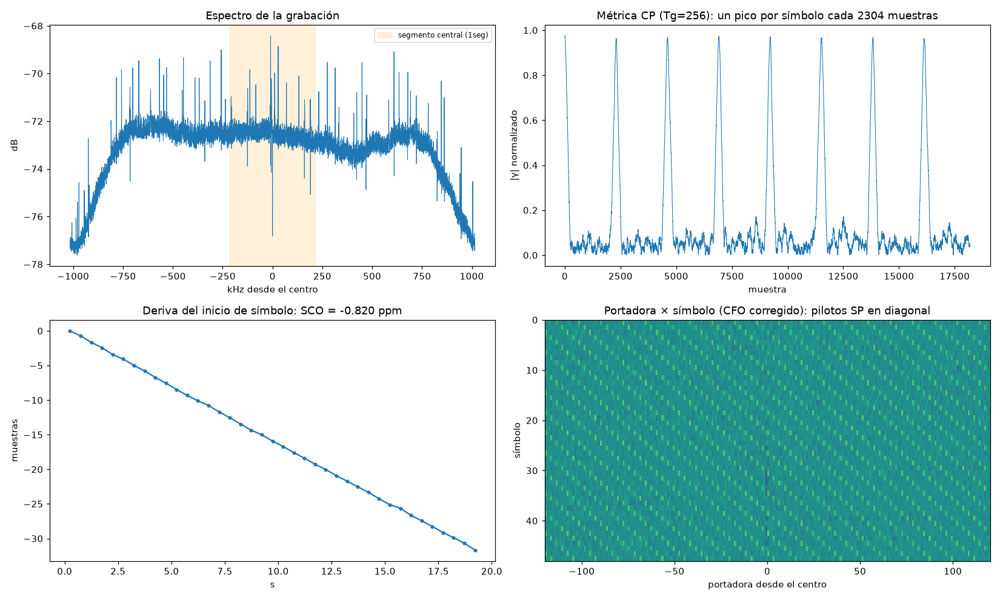

5. Grabación ISDB-Tb del canal 29 para desarrollo en FPGA
Una grabación IQ real del centro del canal UHF 29, validada, para usarla como modelo de referencia en Python y como vectores de prueba en testbench HDL (proyecto ISDB-T sobre la HuMANDATA EDA-009).
La grabación
| Parámetro | Valor |
|---|---|
| Archivo | grabaciones/isdbt/20261002_192250_uhf29_563142857Hz_2031746sps_g0.9.cu8 (81 MB) |
| Fecha | 2026-10-02 22:22:50 UTC (19:22 en Chile), Santiago, dipolo en interior |
| Frecuencia central | 563.142857 MHz: centro de la señal del canal 29 (560 + 3 + 1/7 MHz) |
| Tasa de muestreo | 2 031 746 S/s = (512/63 MHz)/4. Real: 2 031 746.004 Hz |
| Duración | 20 s (19.9 s útiles; se descartan los primeros 100 ms) |
| Ganancia | 0.9 dB (mínima manual del R820T) |
| Formato | cu8: I, Q intercalados, uint8 con cero en 127.5 |
| Nivel | rms ~28 cuentas por componente, recorte 0.0003% (~13 dB de margen para el PAPR de OFDM) |
Por qué esa tasa de muestreo: es exactamente ¼ de la tasa elemental de ISDB-T (512/63 MHz = 8.12698 MHz). Así, la parte útil de un símbolo Mode 3 dura 2048 muestras y la separación de portadoras queda en su valor real de 992.06 Hz. Una FFT de 2048 puntos sobre la grabación equivale a las 2048 portadoras centrales de la FFT de 8192 del receptor completo.
Parámetros medidos (tools/analizar_ofdm.py)
| Parámetro | Resultado | Cómo se obtuvo |
|---|---|---|
| Modo | Mode 3 (Tu = 2048 muestras = 1.008 ms) | Picos de correlación CP con Tu = 2048 |
| Intervalo de guarda | 1/8 (Tg = 256, símbolo = 2304 muestras = 1.134 ms) | Nitidez del pico CP: 16.4 contra ~1.1 de 1/4, 1/16 y 1/32 |
| Inicio de símbolo | CP en la muestra 3 (mod 2304); FFT desde la 243 | Pico de la métrica CP, con 16 muestras de margen dentro del CP |
| Error de reloj (SCO) | −0.820 ppm: el dongle muestrea lento | Deriva lineal del pico: −1.667 muestras/s durante 20 s |
| CFO fraccional | −0.323 portadoras = −320.5 Hz | Fase del pico CP |
| CFO entero | +1 portadora | Pilotos SP en la clase k ≡ 1 (mod 3). Coincide con lo esperado por el SCO |
| CFO total | +671.6 Hz (+1.19 ppm) | Fraccional + entero |
| Pilotos dispersos | Avanzan 3 portadoras por símbolo en el 100% de los símbolos | Confirma la sincronización y la modulación coherente (QPSK/QAM) |

Cómo leer el gráfico: - Arriba a la izquierda, el espectro. Es plano en los ~1.6 MHz centrales y cae en los bordes por el filtro del dongle. Los picos finos son pilotos continuos y portadoras TMCC/AC, que se transmiten con más potencia. La banda naranja marca el segmento 1seg. - Arriba a la derecha, la métrica CP. Hay un pico de ~0.97 por símbolo: la SNR es muy alta. - Abajo a la izquierda, la deriva del inicio de símbolo. Es una recta perfecta, y de su pendiente sale el SCO. - Abajo a la derecha, la rejilla portadora × símbolo con el CFO corregido. Las diagonales son los pilotos SP, que avanzan 3 portadoras por símbolo.
Sobre los 210 Hz de diferencia entre el CFO medido (+671.6 Hz) y el esperado por el SCO (+462 Hz): la causa más probable es el paso del PLL del tuner o un error del transmisor. No afecta al desarrollo, porque el receptor estima el CFO de todos modos.
Repetir la grabación (paso a paso)
- Cierra SDR# y SDR++.
- Elige la ganancia. Graba 1 segundo con varias ganancias y mide el nivel. El objetivo
es un rms de ~25–35 cuentas y un recorte por debajo de 0.01%.
Ojo: en
rtl_sdr,-g 0significa ganancia automática, no 0 dB. La mínima manual del R820T es-g 0.9. Enrtl_power, en cambio,-g 0sí es 0 dB manual.
El canal 29 llega tan fuerte que incluso con 2.7 dB se recorta un 0.17%:
| Ganancia | rms (cuentas) | Recorte |
|---|---|---|
| 0.9 dB | 28.8 | 0.0006% |
| 1.4 dB | 33.4 | 0.0068% |
| 2.7 dB | 42.6 | 0.17% |
| 3.7 dB | 52.1 | 1.0% |
- Graba. Esta línea es PowerShell. Para otro canal n, la frecuencia es
(470 + 6·(n−14) + 3 + 1/7)·1e6Hz.
powershell
drivers\rtlsdrblog-V1.4.0\x64\rtl_sdr.exe -f 563142857 -s 2031746 -g 0.9 -n 40634920 grabaciones\isdbt\canal29.cu8
-n es el número de muestras: 2 031 746 × 20 s.
- Valida y estima los parámetros:
bash
python tools/analizar_ofdm.py grabaciones/isdbt/canal29.cu8
Usar la grabación en Python
import numpy as np
crudo = np.fromfile("grabaciones/isdbt/....cu8", dtype=np.uint8).astype(np.float32)
x = ((crudo[0::2] - 127.5) + 1j * (crudo[1::2] - 127.5)) / 127.5
x = x[int(0.1 * 2031746):] # mismo descarte que analizar_ofdm.py
t = np.arange(len(x))
x *= np.exp(-2j * np.pi * 671.6 / 2031746 * t) # corrige el CFO
simbolo0 = np.fft.fftshift(np.fft.fft(x[243:243 + 2048])) # primer símbolo, portadoras centrales
Para tramos largos hay que corregir también el SCO (−0.82 ppm, unas 33 muestras de deriva en 20 s): avanza el inicio de FFT una muestra cada ~0.6 s, o remuestrea la señal.
Vectores para testbench HDL (tools/cu8_a_hex.py)
python tools/cu8_a_hex.py grabaciones/isdbt/ARCHIVO.cu8 --inicio 3 --simbolos 8
- Qué genera: un
.hexcon una muestra de 16 bits por línea,IIQQ, con I y Q de 8 bits en complemento a dos.--inicio 3hace que el archivo empiece justo en el CP de un símbolo. - Archivo ya generado:
..._ini3_8sim.hex, con 18 432 muestras (8 símbolos). Verificado: la correlación del CP es de 0.96–0.97 en cada símbolo.
reg [15:0] mem [0:18431];
initial $readmemh("..._ini3_8sim.hex", mem);
wire signed [7:0] i_s = mem[n][15:8];
wire signed [7:0] q_s = mem[n][7:0];
Ideas de prueba para el HDL:
1. Correlador CP: debe dar picos cada 2304 muestras, en las posiciones 0, 2304, 4608...
2. FFT de 2048 puntos desde la muestra 240 (3 + 256 − 16, contando desde el inicio del .hex).
Compárala con np.fft.fft de la misma ventana. Antes hay que corregir el CFO, o
hacerlo en el HDL con un NCO.
3. Detector de SP: después de la FFT, las portadoras con más potencia deben avanzar
3 posiciones por símbolo.
Próximos pasos posibles
- Decodificar el TMCC para saber la modulación, el código convolucional y el interleaving de cada capa. Para eso hay que ubicar las portadoras TMCC según las tablas de ARIB STD-B31.
- Ecualizar con los SP y ver la constelación del segmento central (1seg, QPSK).
- Grabar varios canales para tener vectores con distintas condiciones de multitrayecto. El canal 50, por ejemplo, tenía la meseta inclinada.